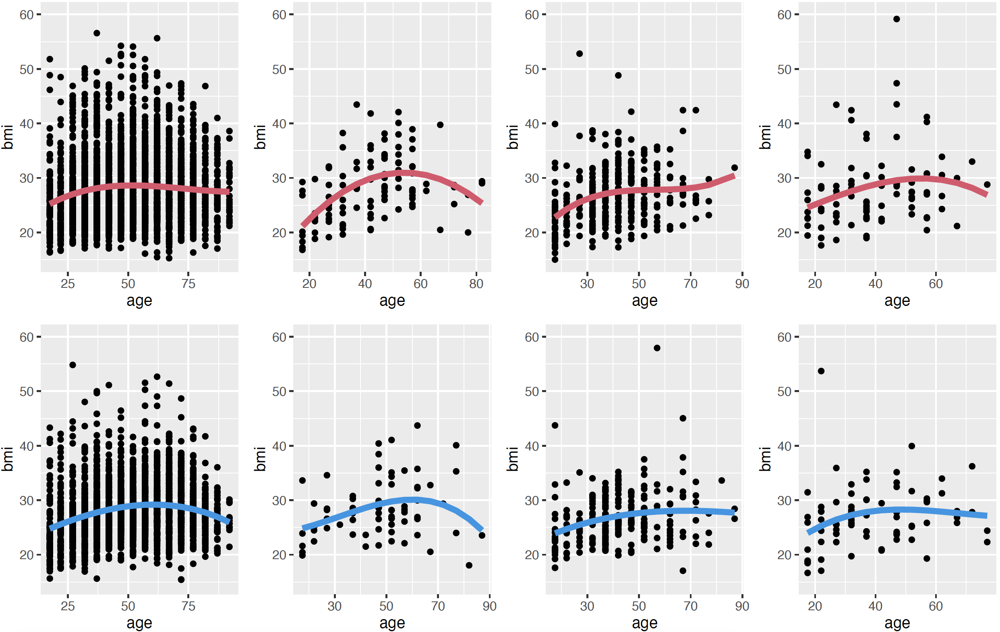
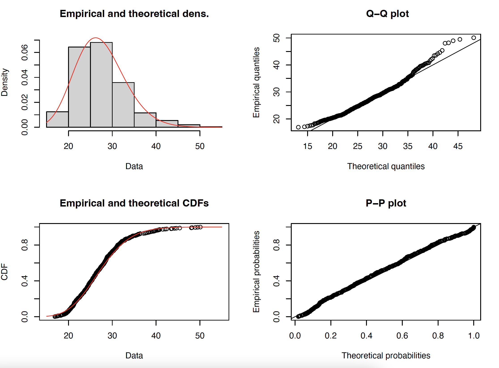
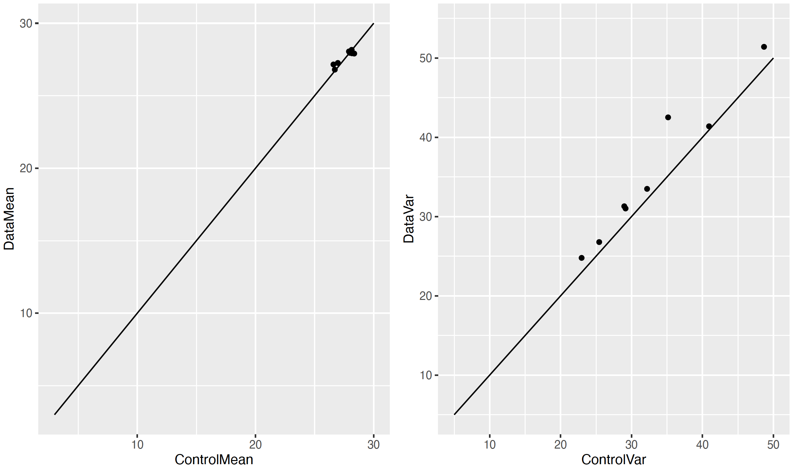

11 Modelling methods
We present here the theoretical principles behind the modelling done in SPC and point to the parts of the code where they are implemented.
11.1 SPENSER and QUANT
The generation of the population data by SPENSER (Synthetic Population Estimation and Scenario Projection) model and the modelling of trips to schools and retail by QUANT are detailed in
Lomax N et al. An Open-Source Model for Projecting Small Area Demographic and Land-Use Change. Geographical analysis, 54(3), 599-622 (2022). (DOI)
and
Spooner F et al. A dynamic microsimulation model for epidemics. Soc Sci Med., 291:114461 (2021). (DOI)
11.2 BMI estimation
Body Max Index (BMI) is calculated for each individual from the Health Survey for England 2019 (access needs to be requested to the UK Data Service). This calculation is independent from the matching with the Heath Survey that happens during the data preparation step, therefore the BMI values will not match the ones that could be obtained from the Health Survey identifiers included in the output. As the BMI variable is not necessarily independent from the other health variables (diabetes etc.), the new variable should only be used for studies where all other variables are considered equal. The new variable is continuous (a float) instead of categorical.
According to the HSE 2019, the distribution of BMI values should follow figure 1. The socio-economic category variable was discarded for the modelling as it is not independent from the other variables, and “mixed” and “other” ethnicity categories have been merged due to small sample sizes.
 Figure 1. BMI per age. Columns represent ethnicity (White, Black, Asian, Other), and the rows sex (female, male).
The distribution for each age group is a gamma distribution. See figure 2.
 Figure 2. Distribution of BMI values for white females aged 30-34.
Due to small sample sizes, the BMI is calculated for each individual depending on their age according to a gamma distribution whose mean is the mean for the corresponding age, sex and ethnicity (thick line in figure 1), but whose variance is only determined by the total variance by sex and ethnicity. The resulting BMI values were validated for Bedfordshire, and correlations of 0.93 and 0.97 were found between the mean and variance of the modelled data compared to those for the reference HSE 2019 data. See figure 3. The distribution per age, as in figure 1, were also validated.
 Figure 3. Modelled mean and variance compared to the reference mean and variance from the HSE 2019 data for each of the eight categories of figure 1.
The R code for this modelling are l. 239-406 of this script, and the validation is included in the legacy version, here.
11.3 Income data
This modelling is based on the 2020 revised edition of the Earnings and hours worked, region by occupation by four-digit SOC: ASHE Table 15 database from ONS. Some percentiles for employees’ gross hourly salaries are provided for each full-time and part-time job according to their four-digit SOC classification per region, and separated by sex. It is supported by this script.
11.3.1 Methods
The data are far from complete (only about 15% of all possible values), especially for the highest deciles. We found that the missing values amongst the partially filled SOCs could be estimated by interpolating an order 3 polynomial to the existing values. We found that the order 3 polynomials were a good fit for most categories (93.11%). SOCs with too many missing values are given the value for the category that is immediately higher in the SOC hierarchy. For some jobs, the highest percentiles seem capped, making the polynomial fitting fail. In that case, we have replaced the unknown values with the highest known value (as there is no clear and systematic fitting for these special cases). In addition, the highest decile is never detailed in the data, which means that the highest salaries are underestimated in the model (and exceptionally high salaries are not present). The result of this phase is four tables {male full-time, male part-time, female full-time, female part-time} containing the coefficients of the fitted order 3 polynomials, with an optional cap when relevant. This step is done in section 1 of the script.
A percentile is chosen randomly (uniformly) for each individual in England, and the salary is then deduced according to their full-time/part-time status, region, sex and SOC category. Age data from ONS are then integrated. Part of the differences that can be observed between different age groups is already taken into account through the SOC variable, since it is expected to evolve throughout an individual’s career. To avoid counting this dependency twice, we compute the residual between the results of the initial modelling that does not take into account age and the expected results by age group according to the data. We then deduce a function that modifies a posteriori the estimated salary of an individual depending on their age, so that the salaries sum correctly by age groups. This step is done in sections 2 to 4 of the script.
To get the number of hours worked per week, we also use the ASHE Table 15. Since only minimal differences are observed between SOC categories, we simply complete missing values by approximating them by values of the category that is immediately higher within the SOC hierarchy. This step is done in section 5 of the script.
When added to the SPC population data, a basic hourly salary column is added, as well as a corresponding annual salary deduced from the number of worked hours. In addition, we repeat this process for all individuals that are categorised as ‘Self-employed’ or ‘Employee unspecified’ by the Time Use Survey matching,, as if they were full time employees. These values are recorded in the columns IncomeHAsIF and IncomeYAsIf.
11.3.2 Comparison to reference values from ONS
We compare the results of the modelling to the raw datasets from ONS.
Modfor modelledMfor maleFfor femaleHfor hourly gross salaryYfor annual gross salaryFTfor full-TimePTfor part-Time- Only individuals recorded as employees (i.e. not self-employed) are taken into account in this section.
Number of employees per sex and full-time/part-time classification
The numbers given by ONS vary from dataset to dataset and are reported by ONS as indicative only. For the modelled values, we give the total number of individuals with a non-zero salary in each category.
| Variable | All | FT | PT | M | M FT | M PT | F | F FT | F PT |
|---|---|---|---|---|---|---|---|---|---|
| ONS tot | 22-26k | 16-19k | 6-8k | 11-13k | 9-11k | 1.5-2k | 11-13k | 6.5-7.5k | 4.5-5.5k |
| Mod tot H | 23.1k | 18.5k | 4.6k | 11.8k | 11k | 0.8k | 11.3k | 7.5k | 3.8k |
| Mod tot Y | 17.6k | 14.8k | 2.8k | 9.4k | 8.9k | 0.5k | 8.2k | 5.9k | 2.3k |
A significant number of individuals listed as working either full or part time have 0 effective worked hours per day according to the Time Use Survey matching. In those cases, an hourly salary is modelled depending on their SOC, region and sex, as for any other employee, but the annual salary will be displayed as 0. It is possible to estimate the likely true number of hours worked from the same ONS dataset (Table 15.9a: Paid hours worked - Total 2020), also depending on their sex, soc and region. This calculation has been added to the “As If” column.
Hourly gross salary per sex and full-time/part-time classification
| Variable | All | FT | PT | M | M FT | M PT | F | F FT | F PT |
|---|---|---|---|---|---|---|---|---|---|
| ONS mean | 17.63 | 18.32 | 13.93 | 18.81 | 19.12 | 14.69 | 16.19 | 17.08 | 13.68 |
| ONS median | 13.71 | 15.15 | 10.38 | 14.84 | 15.58 | 10.12 | 12.58 | 14.42 | 10.47 |
| Mod mean | 16.45 | 17.19 | 13.45 | 17.50 | 17.84 | 12.75 | 15.35 | 16.23 | 13.60 |
| Mod median | 13.55 | 14.46 | 10.23 | 14.27 | 14.72 | 9.16 | 12.79 | 14.12 | 10.51 |
The median values are quite close to the ONS values, but the mean values are always lower. This is expected, see the description of the modelling above.
Annual gross salary per sex and full-time/part-time classification
Only values > 0 are retained for these calculations.
| Variable | All | FT | PT | M | M FT | M PT | F | F FT | F PT |
|---|---|---|---|---|---|---|---|---|---|
| ONS mean | 31,646 | 38,552 | 13,819 | 38,421 | 42,072 | 14,796 | 24,871 | 33,253 | 13,512 |
| ONS median | 25,886 | 31,487 | 11,240 | 31,393 | 33,915 | 10,883 | 20,614 | 28,002 | 4,743 |
| Mod mean | 34,317 | 36,595 | 22,257 | 37,574 | 38,496 | 20,698 | 30,594 | 33,729 | 22,585 |
| Mod median | 28,713 | 30,942 | 17,928 | 31,404 | 32,382 | 17,382 | 25,875 | 29,028 | 18,137 |
The average salary for part-time employees is correct when values equal to 0 are taken into account. This suggests that the total number of hours worked for part-time employees is correct, but the way they are distributed among individuals is not. It could be due to the TUS taking a snapshot of the situation during a particular week, rather than averaging their data over the year. It appears that the TUS matching also overestimates the average number of hours worked for female employees.
Regional differences (hourly gross salary)
| Region | East | East Midlands | London | North East | North West | South East | South West | West Midlands | Yorkshire and The Humber |
|---|---|---|---|---|---|---|---|---|---|
| ONS mean | 16.74 | 15.87 | 23.78 | 15.69 | 16.36 | 17.88 | 16.36 | 16.34 | 15.76 |
| ONS median | 13.28 | 12.65 | 18.30 | 12.40 | 12.90 | 14.33 | 12.74 | 12.92 | 12.46 |
| Mod mean | 16.67 | 15.29 | 19.39 | 15.05 | 15.22 | 17.34 | 15.92 | 15.47 | 14.41 |
| Mod median | 13.69 | 12.79 | 16.25 | 12.42 | 12.44 | 14.84 | 13.35 | 12.64 | 12.44 |
The pearson correlations for mean and median between the modelled and raw values are 0.92 and and 0.93.
Hourly gross salary per one-digit SOC
| 1d SOC | 1 | 2 | 3 | 4 | 5 | 6 | 7 | 8 | 9 |
|---|---|---|---|---|---|---|---|---|---|
| ONS mean | 26.77 | 23.38 | 18.29 | 13.42 | 13.35 | 10.87 | 10.94 | 12.23 | 10.77 |
| ONS median | 20.96 | 21.34 | 15.66 | 11.54 | 12.04 | 10.08 | 9.52 | 10.93 | 9.22 |
| Mod mean | 21.52 | 22.14 | 16.00 | 12.76 | 12.55 | 10.49 | 10.50 | 12.05 | 9.87 |
| Mod median | 17.22 | 20.66 | 14.12 | 11.46 | 11.34 | 9.71 | 9.59 | 10.82 | 9.12 |
- Managers, directors and senior officials
- Professional occupations
- Associate professional and technical occupations
- Administrative and secretarial occupations
- Skilled trades occupations
- Caring, leisure and other service occupations
- Sales and customer service occupations
- Process, plant and machine operatives
- Elementary occupations.
The Pearson correlations for mean and median between the modelled and raw values are 0.98 and 0.98.
Hourly gross salary per age
The reference for this table is: Table 6.5a Hourly pay - Gross 2020
Table before weighting by age:
| Age | 16-17 | 18-21 | 22-29 | 30-39 | 40-49 | 50-59 | 60+ |
|---|---|---|---|---|---|---|---|
| ONS mean | 7.21 | 9.59 | 14.09 | 18.13 | 20.04 | 19.12 | 16.32 |
| ONS median | 6.36 | 9.00 | 12.26 | 15.08 | 15.89 | 14.39 | 12.17 |
| Mod mean | 12.77 | 14.96 | 16.33 | 16.93 | 16.83 | 16.66 | 16.29 |
| Mod median | 10.93 | 12.71 | 13.88 | 14.02 | 13.96 | 13.85 | 13.65 |
The Pearson correlations for mean and median between the modelled and raw values are 0.92 and 0.92.
Table after weighting by age:
| Age | 16-17 | 18-21 | 22-29 | 30-39 | 40-49 | 50-59 | 60+ |
|---|---|---|---|---|---|---|---|
| ONS mean | 7.21 | 9.59 | 14.09 | 18.13 | 20.04 | 19.12 | 16.32 |
| ONS median | 6.36 | 9.00 | 12.26 | 15.08 | 15.89 | 14.39 | 12.17 |
| Mod mean | 9.05 | 11.15 | 14.87 | 17.35 | 17.96 | 17.47 | 15.41 |
| Mod median | 8.20 | 9.51 | 12.86 | 14.41 | 14.78 | 14.43 | 12.56 |
The Pearson correlations for mean and median between the modelled and raw values are 0.99 and 0.99.
11.4 Commuting flows
11.4.1 List of all workplaces in GB
In order to distribute each individual of the population to a unique physical workplace, we first created a population of all individual workplaces in England, based on a combination of the Nomis UK Business Counts 2020 dataset and the Nomis Business register and Employment Survey 2015 (see Data sources). The first dataset gives the number of individual workplace counts per industry, using the SIC 2007 industry classification, with imprecise size (i.e. number of employees) bands at MSOA level. The second dataset gives the total number of jobs available at LSOA level per SIC 2007 industry category. We found that the distribution of workplace sizes follows closely a simple 1/x distribution, allowing us to draw for each workplace a size within their band, with sum constraints given by the total number of jobs available, according to the second dataset. The R codes to create the list of all workplaces can be found here.
11.4.2 Usage inside SPC
The workplace ‘population’ and individual population are levelled for each SIC 2007 category by removing the exceeding part of whichever dataset lists more items. This takes into account that people and business companies are likely to over-report their working availability (e.g. part time and seasonal contracts are not counted differently than full time contracts, job seekers or people on maternity leave might report the SIC of their last job). This process can be controlled by a threshold in the parameter file that defines the maximal total proportion of workers or jobs that can be removed. If the two datasets cannot be levelled accordingly, the categories are dropped and the datasets are levelled globally. Tests in the West Yorkshire area have shown that when the level 1 SIC, containing 21 unique categories, is used, 90% of the volume of commuting flows were recovered compared to the Nomis commuting OD matrices at MSOA level.
The employees for each workplace are drawn according to the ‘universal law of visitation’, see
Schläpfer M et al. The universal visitation law of human mobility. Nature 593, 522–527 (2021). (DOI)
This framework predicts that visitors to any destination follow a simple
ρ(r,f)= K / (rf)2
distribution, where ρ(r,f) is the density of visitors coming from a distance r with frequency f and K is a balancing constant depending on the specific area. In the context of commuting, it can be assumed that f = 1. Additionally, we only need to weigh potential employees against each other, which removes the necessity to compute explicitly K. In the West Yorkshire test, we found a Pearson coefficient of 0.7 between the predicted flows when aggregated at MSOA level and the OD matrix at MSOA level available from Nomis.